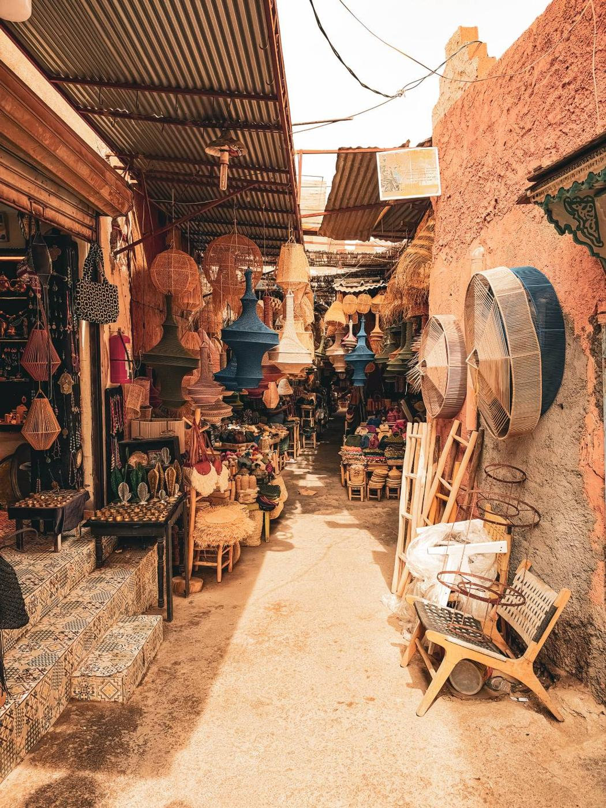
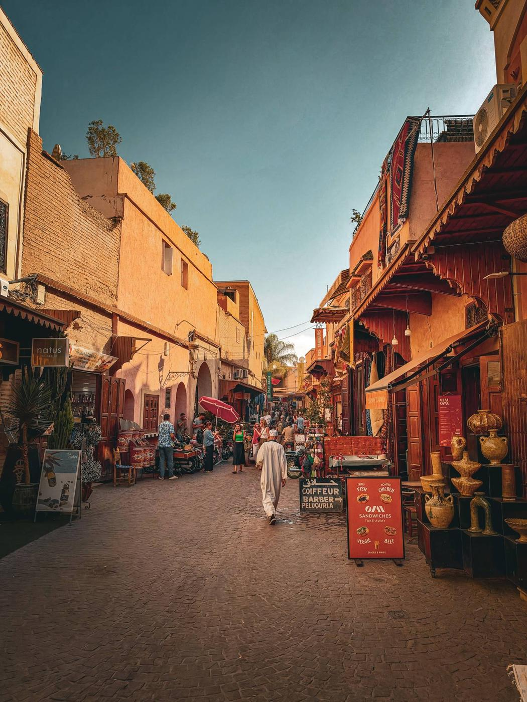
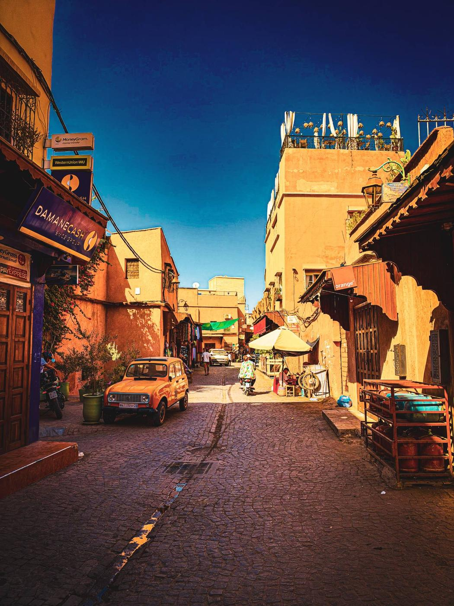
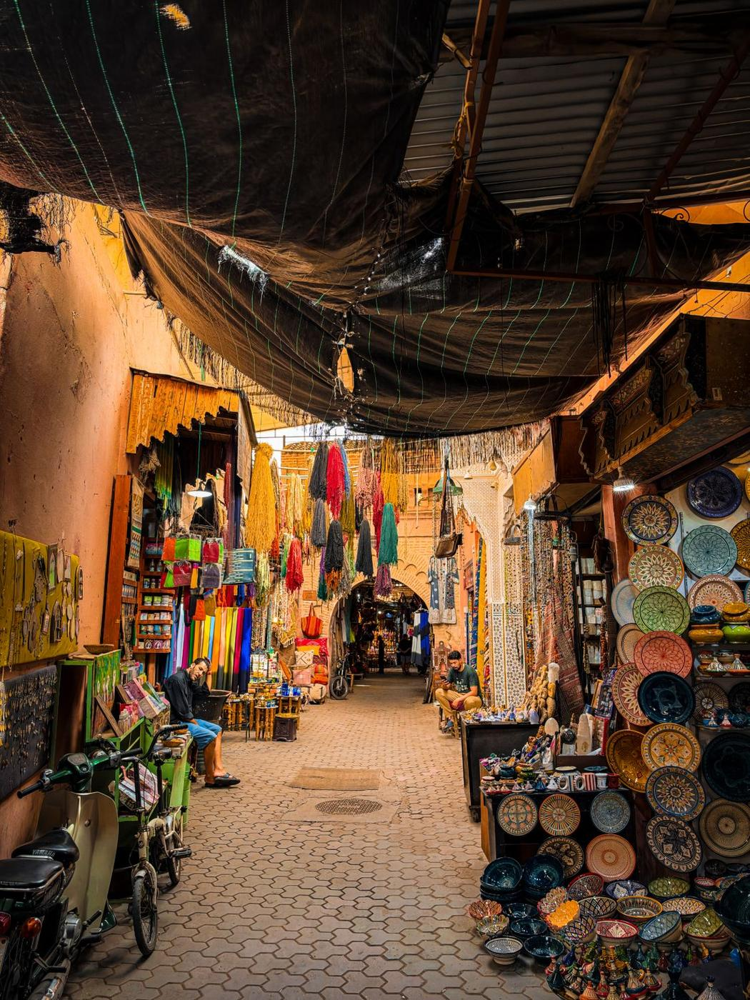
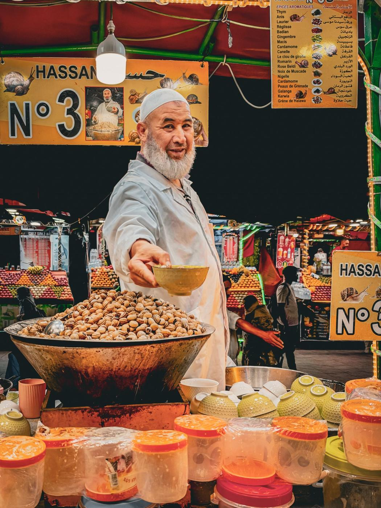
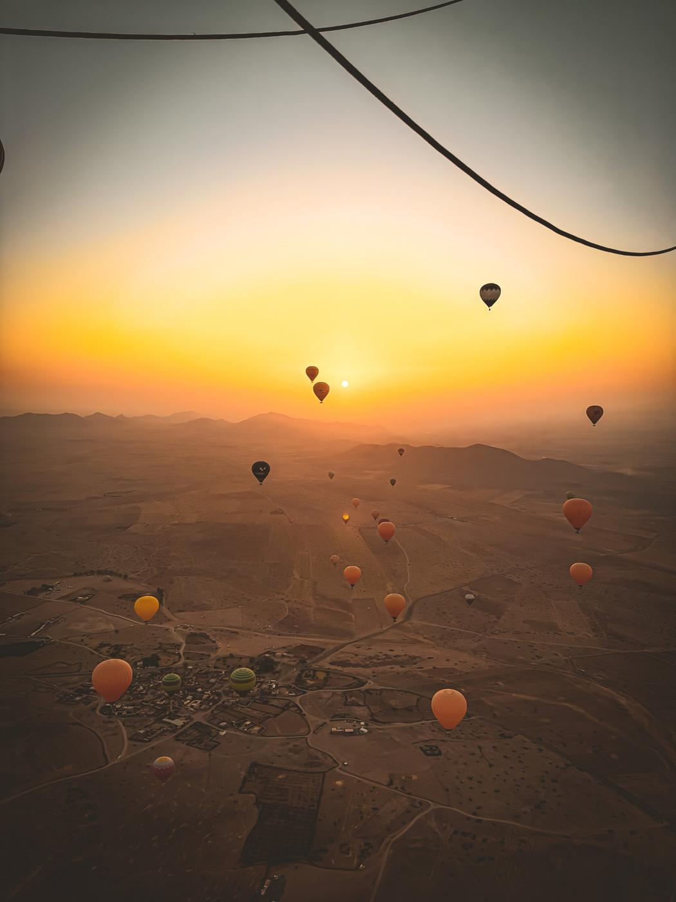
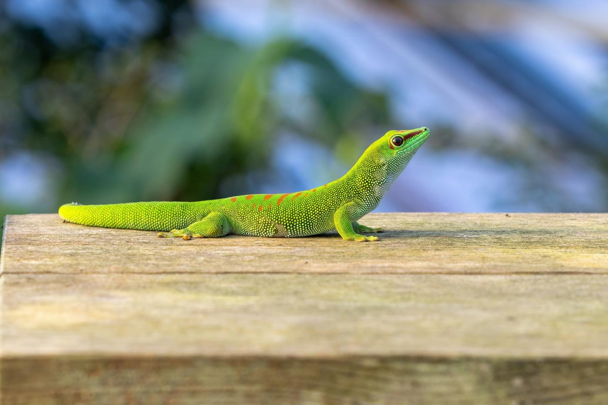
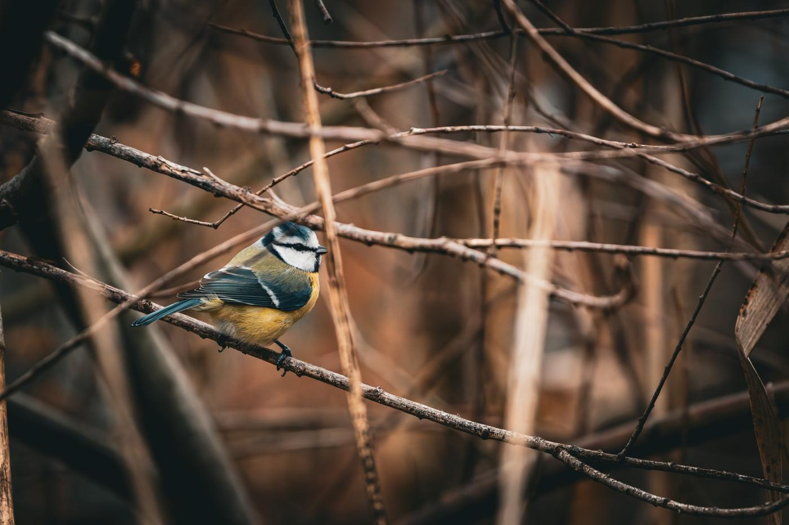

Fotografie
Beim Fotografieren entstehen immer wieder Aufnahmen, die mir ganz besonders gefallen – ob bei meinen Tieren, im Garten oder unterwegs auf Reisen. Hier sammle ich eine kleine Auswahl meiner liebsten eigenen Fotos, unabhängig vom Thema.
Meine liebsten Aufnahmen







